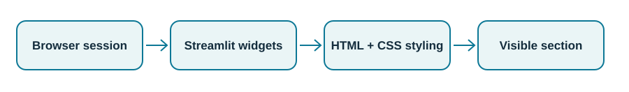
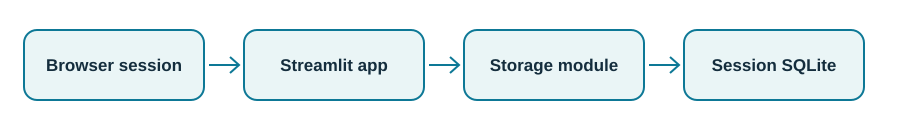
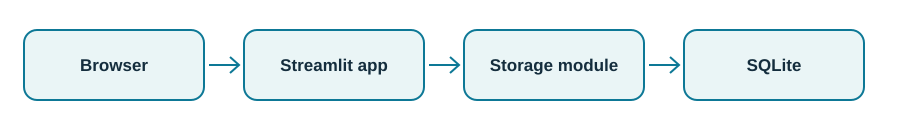
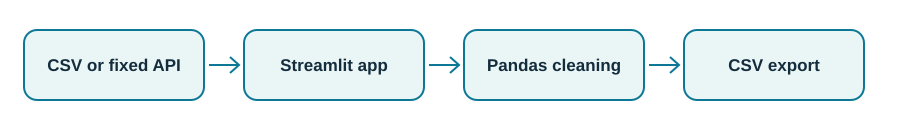

Kajal Raju Kale
BCA student · Aspiring software developer
Contact details, college, graduation dates and public profile await Kajal's confirmation.
Profile
BCA student preparing for an entry-level software development role. Studying practical frontend, backend, database and data workflows through runnable learning projects.
Education
Bachelor of Computer Applications (BCA)
College and attendance dates: to be confirmed by Kajal.
Learning portfolio - project index
- Animated PortfolioStreamlit / HTML / CSS
- Django Task BoardStreamlit / session state (Django / HTMX original)
- Notebook ChatStreamlit / lexical RAG (FastAPI original)
- Job Application TrackerStreamlit / SQLite
- Study PlannerStreamlit / SQLite
- Data Cleaning StudioStreamlit / Pandas / public APIs
Project ownership and next steps
These projects are prepared learning examples. Kajal should run, inspect and modify them, then identify only her own contributions and skills she can explain. Add verified contact information, education dates and a personal GitHub profile before applying.
Animated Portfolio
Streamlit / HTML / CSS
A Streamlit Cloud adaptation of the fictional Northstar studio site. Sidebar navigation switches sections; CSS creates animated hero artwork and responsive case-study cards. The original static HTML/CSS/JS site remains in the folder for comparison.
Project structure
streamlit_app.pyStreamlit navigation, sections and CSS artworkindex.html + styles.cssOriginal standalone sitescript.jsOriginal mobile navigation and scroll reveals
Architecture image

Data flow image

Implementation
Streamlit maintains the selected navigation option as widget state. Python decides which section to render, and a scoped CSS stylesheet handles the hero, artwork and card motion. The HTML/CSS/JavaScript original is retained as a separate exercise to compare browser-native and Streamlit approaches.
Example: Select Work in the sidebar to reveal three fictional portfolio cards.
Key features
Animated hero, responsive navigation, case-study cards and reduced-motion support.
Scope and limits
Fictional content. This Streamlit edition is an adaptation; original static site interactions differ.
Run: streamlit run streamlit_app.py Source and setup guide ↗
Django Task Board
Streamlit / session state (Django / HTMX original)
A deployable Streamlit task board that creates, filters, completes and deletes tasks in isolated session state. The original Django/HTMX implementation remains available for local backend study.
Project structure
streamlit_app.pyStreamlit task interface and session stateboard/models.py + forms.pyOriginal Django data model and validationboard/views.pyOriginal HTMX request and fragment handling
Architecture image
Data flow image

Implementation
The Cloud app validates task input and stores each task in Streamlit session state, so users do not see one another’s entries. Actions mutate the current session and rerun the page. The Django/HTMX project still demonstrates server-rendered partial updates, models and CSRF separately when run locally.
Example: Add a task, mark it done and use the Done filter to inspect it.
Key features
Create, filter, complete, reopen and delete tasks; isolated browser-session data.
Scope and limits
Cloud tasks disappear when the session or app restarts. The Streamlit edition does not expose Django or HTMX at runtime.
Run: streamlit run streamlit_app.py Source and setup guide ↗
Notebook Chat
Streamlit / lexical RAG (FastAPI original)
A Streamlit chat demo that splits notes into passages, ranks them with lexical retrieval and displays matching excerpts with source citations. The original FastAPI/SQLite/Ollama app remains for local study.
Project structure
streamlit_app.pyChat, knowledge library and session stateretrieval.pyChunking and lexical TF-IDF rankingknowledge/Bundled demonstration notesapp.pyOriginal local FastAPI and SQLite implementation
Architecture image
Data flow image

Implementation
The Streamlit app seeds example Markdown notes, stores additions per browser session and chunks them using the shared retrieval module. A question ranks passages by lexical TF-IDF and presents matching excerpts with citations; it clearly labels them as retrieved text, not generated answers. The separate local FastAPI app supports optional Ollama.
Example: Ask about a bundled note and expand Retrieved sources to inspect the passages.
Key features
Upload or paste text notes, delete documents, ask questions, inspect ranked citations and clear chat.
Scope and limits
No language-model generation in the Cloud edition. Lexical matching can miss synonyms; session notes and chat disappear on restart. Avoid sensitive uploads.
Run: streamlit run streamlit_app.py Source and setup guide ↗
Job Application Tracker
Streamlit / SQLite
A Streamlit dashboard for fictional job applications. It uses a separate temporary SQLite database for each browser session on the shared Cloud instance.
Project structure
app.pyForms, filters, tabs and metricsapplication_store.pyValidation and SQLite queriestests/test_storage.pyTemporary-database lifecycle check
Architecture image

Data flow image

Implementation
Streamlit forms gather company, role, status and notes. The storage module validates input and uses parameterized SQL to update a per-session temporary SQLite file. After each action, the app reruns, reads the current session’s data and recalculates metrics. Other visitors use separate database paths.
Example: After an interview, change an application status to Interview and see the dashboard count update.
Key features
Add, update, delete, search and status-filter records; metrics for interviews and offers.
Scope and limits
Session data are temporary and may disappear when the server restarts. Use fictional entries; this is not a durable job-search database.
Run: streamlit run app.py --server.port 8501 Source and setup guide ↗
Study Planner
Streamlit / SQLite
A Streamlit coursework planner. A session-specific temporary SQLite file retains tasks during a browser session without exposing them to other visitors.
Project structure
app.pyTask forms, filters and metricsplanner_store.pyTask validation and SQLitetests/test_storage.pyCreate, edit and delete checks
Architecture image

Data flow image

Implementation
The UI separates review, creation and editing into tabs. The storage module validates fields and uses parameterized SQL. Every session receives a distinct temporary SQLite path, and metrics are recalculated after each interaction.
Example: Add a coursework task, then change it from To do to Done and verify the progress count.
Key features
Create and edit coursework, track progress, search notes and filter by task status.
Scope and limits
Session data are temporary and may disappear on restart; use fictional coursework tasks.
Run: streamlit run app.py --server.port 8502 Source and setup guide ↗
Data Cleaning Studio
Streamlit / Pandas / public APIs
An interactive data workflow with a fictional offline sample, CSV upload and fixed public sources for weather, currency rates and economic indicators.
Project structure
app.pySource selection and cleaning controlssources.pyOpen-Meteo, ECB, World Bank clientscleaning.pyPure Pandas transformationssamples/Offline demonstration dataset
Architecture image

Data flow image

Implementation
A source adapter turns each supported API response or CSV input into a Pandas table. A pure cleaning function copies the original table before applying selected transformations, so previewing alternatives does not alter the source. Column profiles expose types, missing values and unique counts; the final table is serialized to CSV for download.
Example: Load the fictional sales sample, convert revenue to numbers, fill numeric medians and compare missing-cell counts before exporting.
Key features
Trim text, deduplicate, parse dates and numbers, handle missing values and inspect before/after metrics.
Scope and limits
Public APIs need network access and may rate limit. Uploaded data remains in the session; previews show 500 rows while downloads retain all rows. Avoid sensitive uploads.
Run: streamlit run app.py --server.port 8503 Source and setup guide ↗